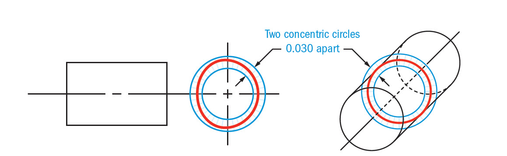
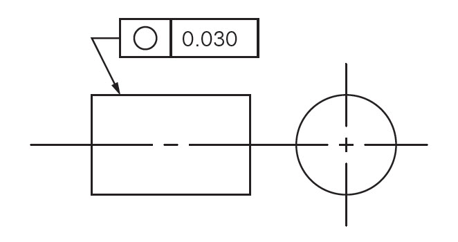
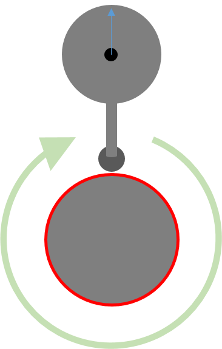
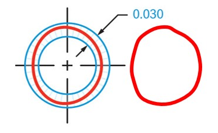

A circularidade em GD&T indica o quanto um
objeto circular tenha o seu circulo perfeito, afim de garantir
que um circulo tenha um minímo de erro de forma possivel.
ZONA DE TOLERÂNCIA
Dois circulos concentricos definem a zona de tolerância onde o erro de forma deve estar centralizado.

PODE USAR DATUM?
NÃO
PODE USAR MODIFICADORES?
NÃO
COMO ESPECIFICAR CIRCULARIDADE
COMO MEDIR A CIRCULARIDADE

A peça é girada em torno do eixo central enquanto um medidor registra a variação da superfície.
RESULTADO DO ERRO DE FORMA ENCONTRADO

A maior e a menor medida encontrada durante a rotação completa devera ser anotada, o diferencial entre esses apices representara o erro de forma do circulo medido.
RELAÇÃO COM OUTROS CONTROLES
CILINDRICIDADE
A circularidade é uma versão 2D da cilindricidade que visa controlar a forma de um perfil cilindrico e a circularidade seria uma forma de seccionar a cilindricidade.
A circularidade e cilindricidade é
utilizada para limitar
a ondulação (erro de forma) de uma superfície sem alterar
sua tolerância
dimensional (tamanho).
A circularidade e a cilindricidade controla a forma de um
círculo, garantindo
que ele permaneça dentro de uma zona de tolerância
específica, independentemente das dimensões gerais da peça.
Isso permite que a peça mantenha sua forma circular precisa
sem a necessidade de apertar as tolerâncias dimensionais, o
que pode ser mais caro e difícil de fabricar.
RELAÇÃO COM PERFIL DE LINHA
O perfil de linha controla a forma de
uma linha ao longo de uma superfície.
Em uma relação implicita podera ser utilizado para garantir
a forma correta de uma seção transversal, complementando a
circularidade em certas aplicações.
Se quizer aprender mais sobre este e outros recursos GD&T a FORMA3D possui um bom portifólio de treinamento online e presencial.

ANDRÉ ROBERTO DE SOUZA
Forma Ações Inteligentes Ltda